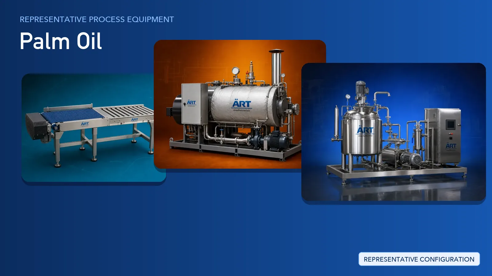

Palm Oil Processing Plant & Machinery Solutions (Crude Palm Oil, Palm Kernel Oil & Packing Lines)
Palm oil is one of the most widely produced vegetable oils in the world, recovered as crude palm oil from the fruit of the oil palm and as palm kernel oil from the nut inside it.

About Palm Oil processing
ART Mechatronics provides complete turnkey solutions for palm oil processing plants, covering fruit reception and cleaning, sterilisation and cooking support, expelling, kernel recovery and drying, bulk storage, dust and pollution control, automation, and filling and packing lines for crude and refined palm oil. Refining operations are supported through integration with the plant's refining section, while ART Mechatronics supplies and engineers the handling, thermal, pressing, storage, automation and packaging systems around it.
Complete Palm Oil Process Flow
Fresh fruit bunches and loose fruit are received, weighed and fed into the plant.
Ensures steady and controlled feed into the process.
Fruit bunches are treated with steam and the fruit is then separated from the empty bunches.
Supports:
- Easier release of fruit from the bunch
- Softened fruit for the digestion stage
- Smoother downstream pressing
Separated fruit is heated and mashed so the oil-bearing material is opened up before pressing.
Prepares a uniform mash for the press.
The digested mash is pressed to separate crude palm oil from the fibre and nut.
Produces:
- Crude palm oil for clarification
- Press cake containing fibre and nuts
Pressed oil is settled, clarified and filtered, then transferred to bulk storage for dispatch or refining.
Prepares clean crude palm oil for the next stage.
Refining operations such as neutralisation, bleaching, deodorisation and fractionation are carried out in the plant's refining section. ART Mechatronics supports these plants by supplying and integrating the surrounding handling, thermal, storage, automation and packing systems rather than the refining columns themselves.
Fibre and nuts are separated from the press cake, the nuts are cracked, kernels are recovered and dried, and the kernel is pressed for palm kernel oil.
Recovers additional value as:
- Palm kernel oil
- Palm kernel cake
- Shell and fibre by-products
Fibre, shell and kernel handling areas are supported with dust extraction and pollution control equipment for a cleaner, safer plant environment.
Crude and refined palm oil is filled into consumer, bulk and export packs, coded, labelled and prepared for dispatch.
Suitable for:
- Pouch and bottle retail packs
- Jerry can and tin packs
- Drum and bulk dispatch
Turnkey Palm Oil Plant Solutions
ART Mechatronics offers complete turnkey solutions for palm oil processing plants, including:
- Process design & plant layout
- Fruit handling and sterilisation support systems
- Cooking and pressing sections
- Clarification, filtration and bulk storage support
- Kernel recovery and drying systems
- Dust collection & pollution control
- Automation & control panels
- Filling and packing line integration
- Installation & commissioning
- After-sales support
We customize solutions based on:
- Product type (crude palm oil, palm kernel oil, refined palm oil)
- Production capacity
- Level of automation required
- Storage and dispatch requirements
- Packaging format (pouch, bottle, jerry can, drum, bulk)
Refining sections are handled as an integration and support scope alongside the client's refining partner.
Why Choose ART Mechatronics for Palm Oil
- Experience across oil and agro processing plants
- Expeller-based extraction and press-cake handling expertise
- Steam, thermal and drying systems engineered for the process
- Kernel recovery and by-product handling covered in the same scope
- Dust collection and pollution control designed into the plant
- Automation and control panels for consistent, repeatable operation
- Filling and packing lines for retail, bulk and export packs
- Single-point turnkey responsibility from layout to commissioning
- Global export capability
Where it's used
Get pricing & specs for the Palm Oil plant
Share the product, target capacity, current process and plant location. These details help our engineers discuss the right machine or line configuration.
One partner, from design to start-up
ART Mechatronics designs, manufactures, installs and commissions your Palm Oil plant solution with regional presence in India, UAE and Thailand.